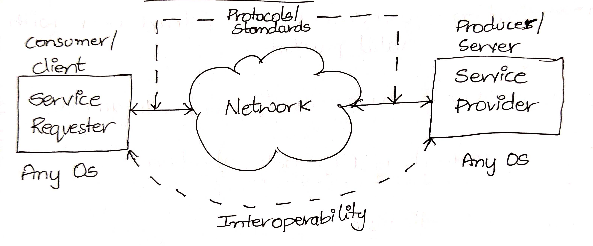
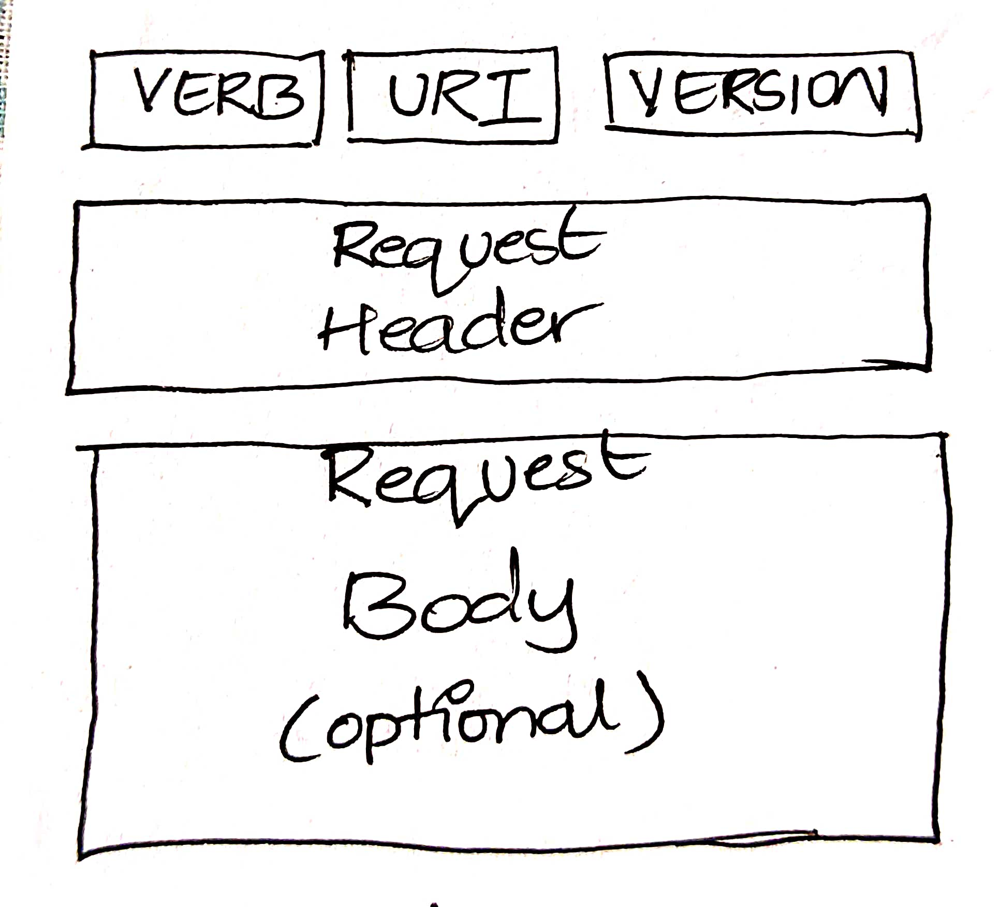
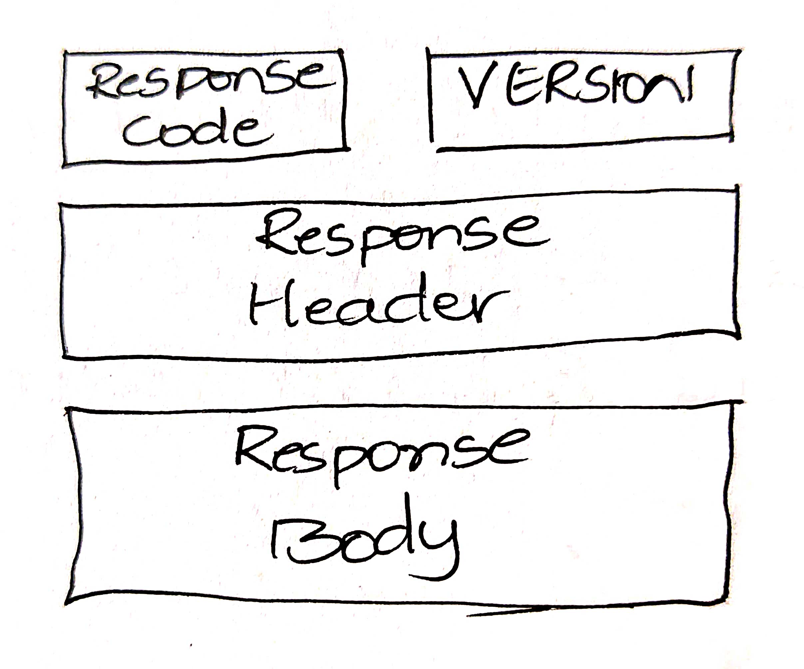

API Notes
To Communicate between 2 different Software, we need a mediator, and the mediator is called Application Programming Interface.
Let's take one easy example, Imagine a person say Adam wants to order food in Restaurant.
Adam orders the food by calling a waiter.
The waiter takes the order to Kitchen.
The menu is prepared in Kitchen. The waiter brings the ordered food and served it to Adam.
Application Programming Interface is responsible for taking your request and giving it to Server.
After processing, the response is shared/returned to you.
About Web Service:
In simple words, If the communication between 2 different Software happens over the Web/Network, we can call this as Web Service.
Web Service is basically, Providing Service Over Network/Web.
Service Requester is termed as Client/Consumer.
Service Provider is termed as Server/Producer.
Client requests data to Server over Web, Server responds data to Client over Web.
Service should follow the Web Protocol/Standard while performing information exchange.
Service should allow interoperability
Example:
The requester can request from any type of OS and the Provider can respond from any type of OS, which should not influence data that is being processed.

About Authentication and Authorization:
The server has to identify whether the requester is Valid or not? and Whether the requester has permission or not? This is where the Authentication and Authorization come into the picture. To keep is short,
1. Authentication Checks whether the User is a Registered User or Not.
2. Authorization Checks whether the User has permission to access the Resource or not.
About REST:
REpresentational State Transfer is an architectural style for providing standards between computer systems on the web, making it easy for the systems to communicate with each other.
In this architecture style, we deal with Resources. The resource can be any object, document, or thing that you may need to store or retrieve from another system.
Each Resource is identified via an Endpoint. In REST, operations are performed on Resource rather than Interface.
Here Server implementation and Client implementation are separate and the Requests are stateless - If the different client sends the same request, the server performs the requested action and different clients receive the same response.
About Client-Server Communication and HTTP Verbs:
The data exchange between 2 software involves the Creation / Retrieval / Modification of the resource. The client sends a request to create/retrieve/modify the resource and the Server responds to the request.
A request generally consists of:
1. HTTP VERB - Operation to be performed on the resource (POST/PUT/GET/DELETE)
2. Path - Resource URI on which the operation to be performed.
3. Version - HTTP version used, typically its HTTP/1.1
4. Request Header - Additional information required for the request.
5. Request body - Payload for the request which is optional

Few Header entries :
1. Authorization - Basic Authentication or OAuth
2. Content-Type - Alerts about the type of data that is being sent. Eg - text/plain application/json text/json
3. Accept-Type - Different types of data that are agreed upon for exchange between Server and Client.
The response generally consists of:
1. Code - Response code is the information about the success of the operation.
2. Version - HTTP version used, typically its HTTP/1.1
3. Response Header - Additional information added for the response.
4. Response Body - Payload returned by the Server.
